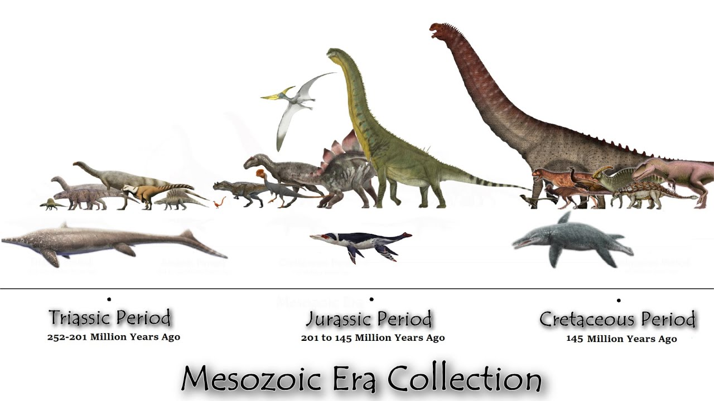

Mezozoyik Zaman, yerküre tarihinin en ikonik dönemlerinden biri olup Triyas, Jura ve Kretase periyotlarını kapsar. Fanerozoyik Üst Zaman'ın ortasında yer alan bu dönem, devasa sürüngenlerin egemenliği, süper kıta Pangea'nın parçalanması ve modern yaşam formlarının (çiçekli bitkiler, memeliler ve kuşlar) ilk adımlarını atmasıyla karakterize edilir.
Dinozorların Yükselişi ve Kıtaların Ayrılışı
Mezozoyik, biyolojik çeşitliliğin yeniden inşa edildiği ve modern ekosistemlerin temellerinin atıldığı bir evredir:
• Dinozorların Egemenliği: Orta Triyas'ta ortaya çıkan dinozorlar, yaklaşık 135-150 milyon yıl boyunca karasal ekosistemlerin baskın omurgalıları olmuşlardır.
• Kıtasal Değişim: Süper kıta Pangea, bu zaman zarfında kademeli olarak parçalanarak günümüzdeki kıta dizilimlerine doğru hareket etmeye başlamıştır.
• İklimsel Yapı: Yerküre genel olarak bugünden daha sıcak bir sera iklimine sahip olsa da zaman içinde değişkenlik gösteren ısınma ve soğuma dönemleri yaşanmıştır.
• Yeni Yaşam Formları: İlk memeliler ve arkaik kuşlar bu dönemde evrimleşmiş; Kretase'de ortaya çıkan çiçekli bitkiler ise hızla çeşitlenerek bitki örtüsünü dönüştürmüştür.
• Büyük Yok Oluşlar: Mezozoyik, tarihin en büyük yok oluşu olan Permiyen-Triyas felaketinin ardından başlamış ve kuş dışı dinozorların sonunu getiren Kretase-Paleojen yok oluşuyla noktalanmıştır.

Mezozoyik Zaman'ın üç ana periyodu olan Triyas, Jura ve Kretase dönemlerindeki kara ve deniz sürüngenlerinin gelişimini ve boyut karşılaştırmalarını gösteren koleksiyon.